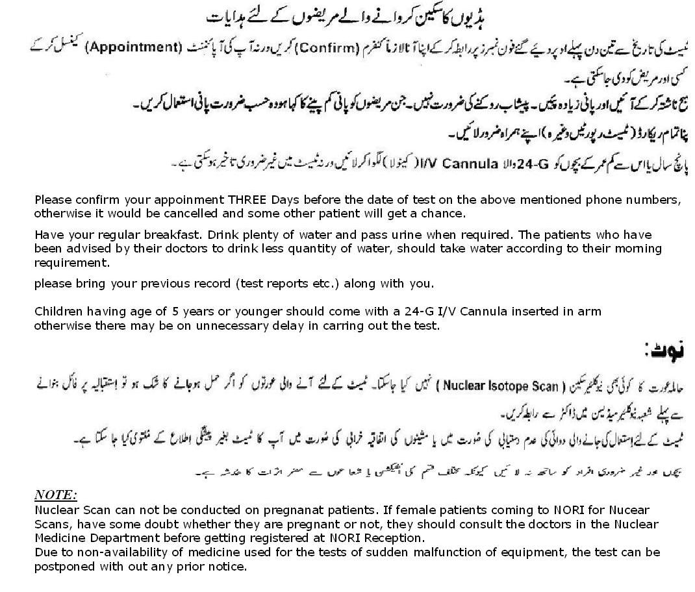
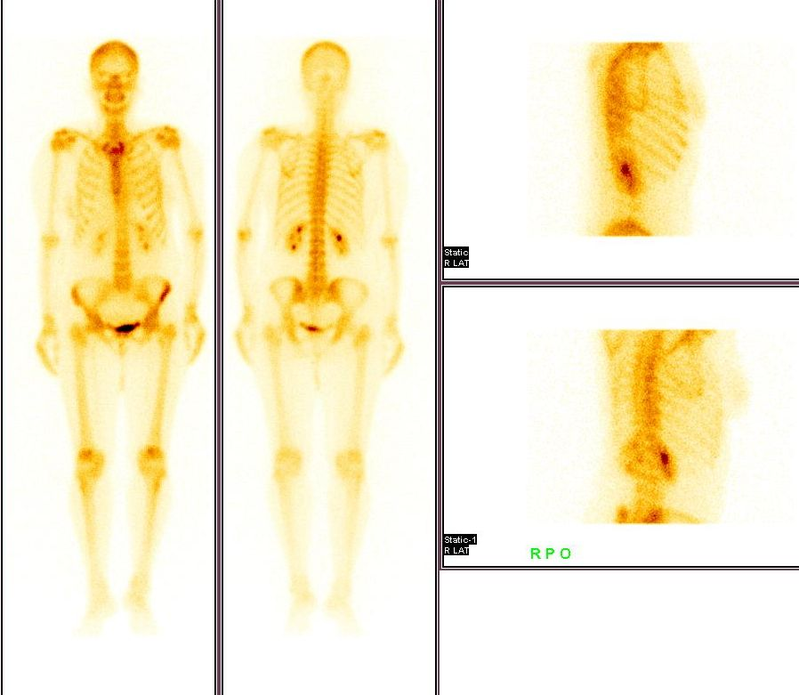

Bone Scan is a simple and cost-effective means of imaging entire skeleton in one scan. It is frequently utilized for assessment of bone metastases, bone infection, bone tumors and sports injuries.
 
different attibutes and advancement in services